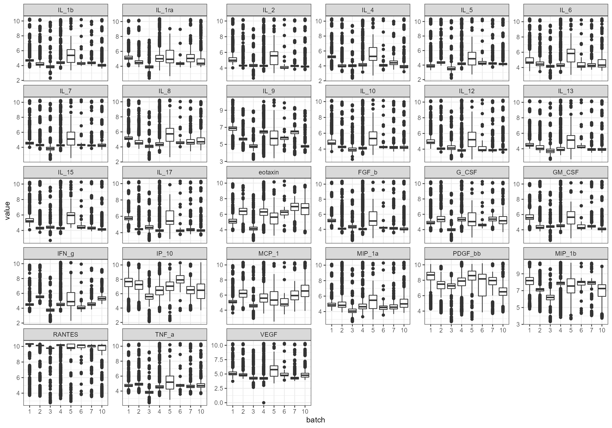
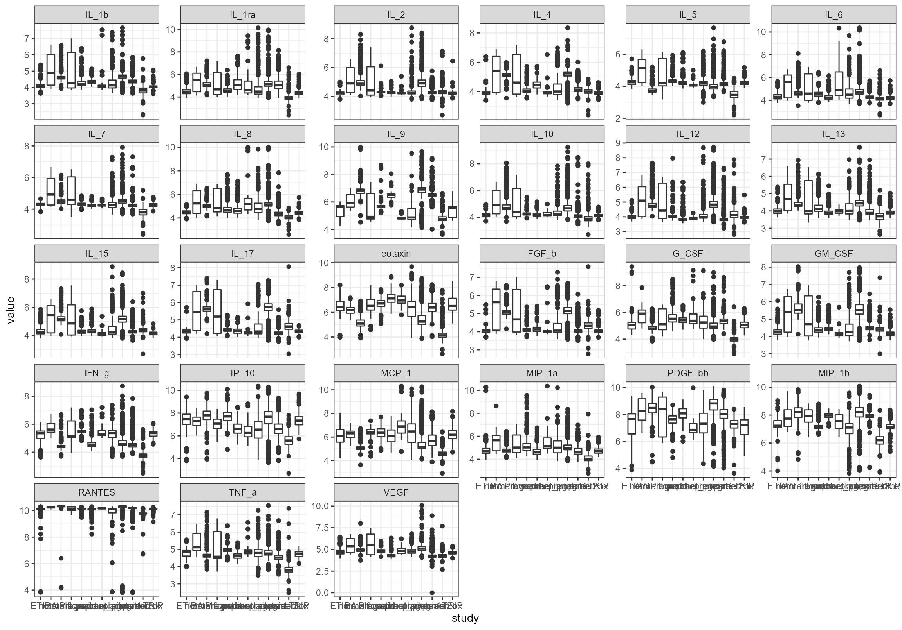
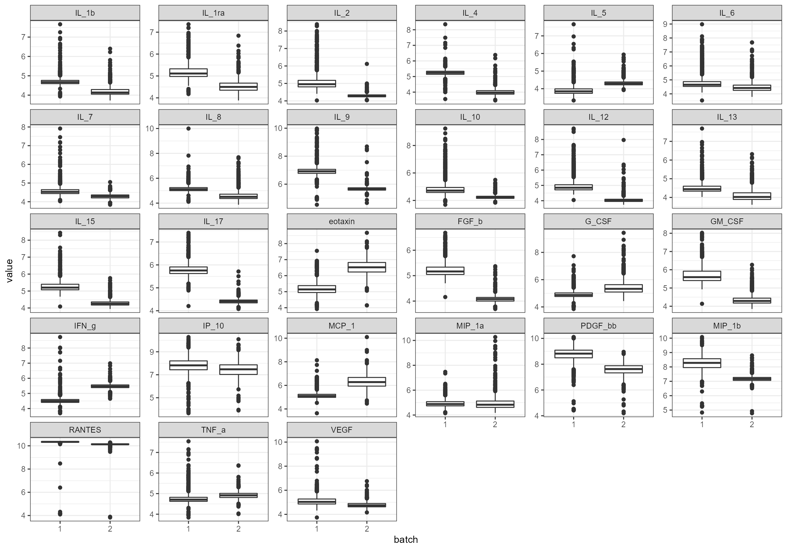
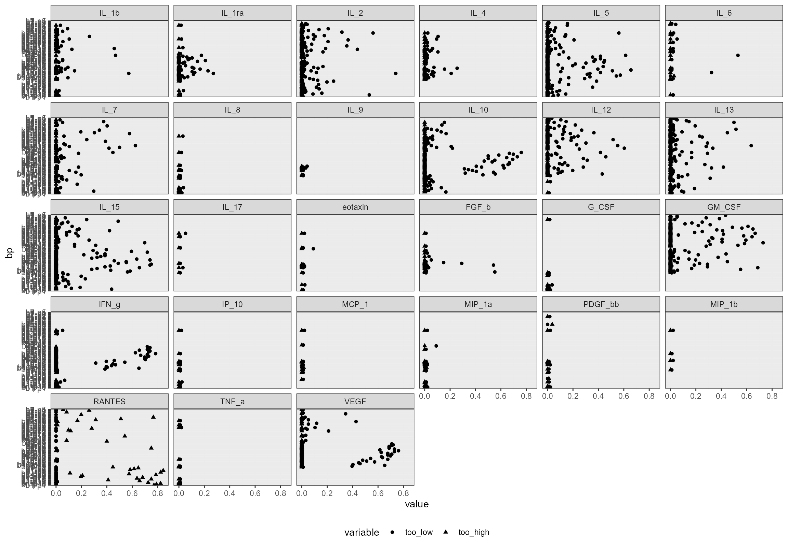
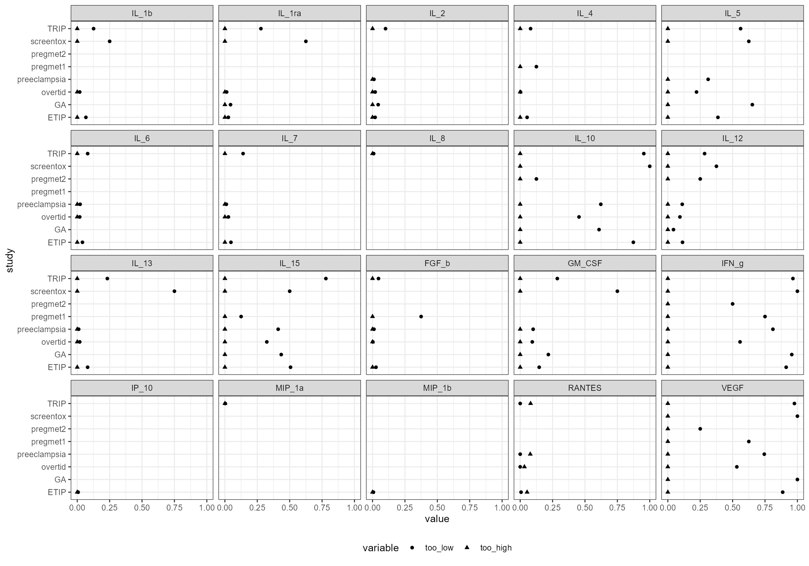

inpreg.RmdThe idea with this package is to simplify the normalization and pre-processing of multi-batch cytokine data.
# library("inpreg")
# devtools::install_version("nCal", version = "2021.9-12", repos = "http://cran.us.r-project.org")
devtools::load_all("C:/Users/anderhja/Lokal_folder/Processing-cytokine-data-in-R/")
#> Warning in Sys.setlocale("LC_CTYPE", ctype): OS reports request to set locale to
#> "Norwegian Bokmål_Norway.utf8" cannot be honored
#> i Loading inpreg
#> Loading required package: data.table
#>
#> Loading required package: ggplot2
obj <- inpreg(
filenames = list(
FI = "C:/Users/anderhja/Lokal_folder/git/fluorescens_alle.csv",
biorad = "C:/Users/anderhja/Lokal_folder/git/raw_alle.csv",
expected = "C:/Users/anderhja/Lokal_folder/git/fluorescens_expected.csv"
)
)
#> INFO [2022-11-02 21:23:28] Files imported
#> INFO [2022-11-02 21:23:28] Using FI
#> INFO [2022-11-02 21:23:28] Using log_e-valuesNote: By default, all values are log-scaled. You can now make a simple plot of all FI values
obj$plot_boxplot()
#> Warning: Removed 1731 rows containing non-finite values (stat_boxplot).
If you prefer biorad concentrations rather than FI values, you haveto specify this when you create the object:
# library("inpreg")
obj_biorad <- inpreg(use_FI = FALSE)
#> INFO [2022-11-02 21:23:35] Files imported
#> INFO [2022-11-02 21:23:35] Using log_e-values
obj$plot_boxplot()
#> Warning: Removed 1731 rows containing non-finite values (stat_boxplot).Note that all samples are used by default. You can select
specific sample types by selecting one of
types = c("X", "S", "C"); X is serum,
S is the standards and C refers to control
samples. You can also redefine the x_axis of the boxplot.
For example:
# Use serum samples only
obj$set_type(type = "X")
#> WARN [2022-11-02 21:23:41] Only using samples of type X
# USe `study` as x axis
obj$plot_boxplot(x_axis = "study")
#> Warning: Removed 1024 rows containing non-finite values (stat_boxplot).
By default, all batches are included (note: those with negative batch (or plate!) number are excluded). To select specific batches, list them as follows:
obj$set_batch(batch = c("1", "2"))
#> WARN [2022-11-02 21:23:48] Only using samples from batch(es) 1Only using samples from batch(es) 2
obj$plot_boxplot()
And to select all again:
obj$set_batch(batch = NULL)
#> WARN [2022-11-02 21:23:50] Only using samples from batch(es)Note: This is based on biorad data, not FI (as we are not missing any FI data). Since we will estimate our own values, are the biorad data only indicative
By batch and plate (shorthand: bp):
obj$plot_missing(x_axis = "bp")
#> INFO [2022-11-02 21:23:51] Showing missing on biorad data
#> INFO [2022-11-02 21:23:51] Showing proportion
By study in batch 2:
obj$set_batch(batch = "2")
#> WARN [2022-11-02 21:23:53] Only using samples from batch(es) 2
obj$plot_missing(x_axis = "study")
#> INFO [2022-11-02 21:23:53] Showing missing on biorad data
#> INFO [2022-11-02 21:23:53] Showing proportion
To get interactive plots with ggplotly:
plotly::ggplotly(
obj$plot_missing(x_axis = "study")
)
#> INFO [2022-11-02 21:23:54] Showing missing on biorad data
#> INFO [2022-11-02 21:23:54] Showing proportionPlot the medians and 25. and 75. percentiles
obj$set_type("X")
#> WARN [2022-11-02 21:23:55] Only using samples of type X
obj$set_batch(batch = "2")
#> WARN [2022-11-02 21:23:55] Only using samples from batch(es) 2
plotly::ggplotly(
obj$plot_medians(x_axis = "study")
)